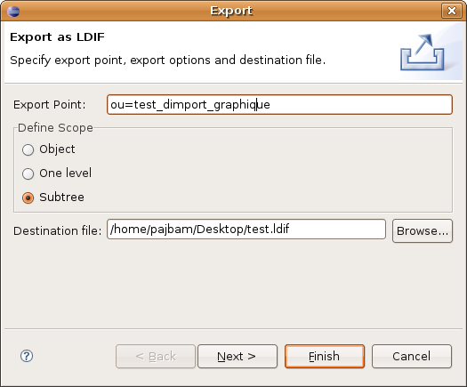
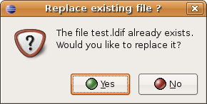
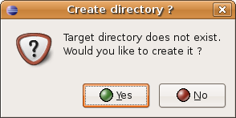
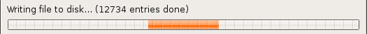
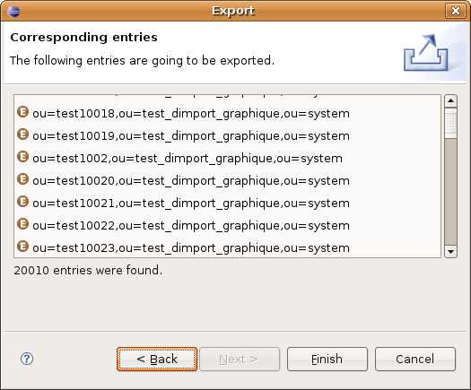

Exporting to LDIF file
In this section, you will learn how to export LDAP entries to a LDIF file.
- Select Export from the LDIF menu.

- A wizard shows up.
- The first page of the wizard allows to set up the Export Point, the scope of the export and the destination file.

- Click the Finish to export entries.
- If the destination already exists, you will be asked for confirmation before replacing the file.

- If the target directory does not exist, you will be asked for confirmation before creating the right path.

- A progression bar representing the state of the export shows up at the bottom of the window, just above the buttons.

- The second page of the wizard allows you to preview what is going to be exported (the number of entries and which entries). To access this page, click on the Next Button.
